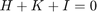
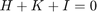
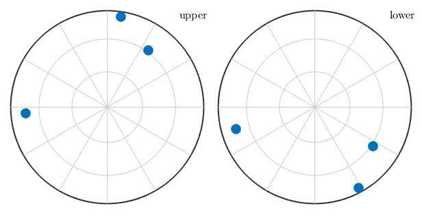

Miller indices are used to describe directions with respect to the crystal reference system.
Contents
Crystal Lattice Directions
Since lattice directions are always subject to a certain crystal reference frame, the starting point for any crystal direction is the definition of a variable of type crystalSymmetry
cs = crystalSymmetry('triclinic',[5.29,9.18,9.42],[90.4,98.9,90.1]*degree,... 'X||a*','Z||c','mineral','Talc');
The variable cs containes the geometry of the crystal reference frame and, in particular, the alignment of the crystallographic a,b, and, c axis.
a = cs.aAxis b = cs.bAxis c = cs.cAxis
a = Miller size: 1 x 1 mineral: Talc (-1, X||a*, Z||c) u 1 v 0 w 0 b = Miller size: 1 x 1 mineral: Talc (-1, X||a*, Z||c) u 0 v 1 w 0 c = Miller size: 1 x 1 mineral: Talc (-1, X||a*, Z||c) u 0 v 0 w 1
A lattice direction m = u * a + v * b + w * c is a vector with coordinates u, v, w with respect to these crystallographic axes. Such a direction is commonly denoted by [uvw] with coordinates u, v, w called Miller indices. In MTEX a lattice direction is represented by a variable of type Miller which is defined by
m = Miller(1,0,1,cs,'uvw')
m = Miller size: 1 x 1 mineral: Talc (-1, X||a*, Z||c) u 1 v 0 w 1
for values u = 1, v = 0, and, w = 1. To plot a crystal direction as a spherical projections do
plot(m,'upper','labeled','grid')

Crystal Lattice Planes
A crystal lattice plane (hkl) is commonly described by its normal vector n = h * a* + k * b* + l * c* where a*, b*, c* describes the reciprocal crystal coordinate system. In MTEX a lattice plane is defined by
m = Miller(1,0,1,cs,'hkl')
m = Miller size: 1 x 1 mineral: Talc (-1, X||a*, Z||c) h 1 k 0 l 1
By default lattice planes are plotted as normal directions. Using the option plane we may alternatively plot the trace of the lattice plane with the sphere.
hold on % the normal direction plot(m,'upper','labeled') % the trace of the corresponding lattice plane plot(m,'plane','linecolor','r','linewidth',2) hold off

Note that for non Euclidean crystal frames uvw and hkl notations usually lead to different directions.
%s
Trigonal and Hexagonal Convention
In the case of trigonal and hexagonal crystal symmetry often four digit Miller indices [UVTW] and (HKIL) are used, as they make it more easy to identify symmetrically equivalent directions. This notation is reduntant as the first three Miller indeces always sum up to zero, i.e.,
 and

. The syntax is
and

. The syntax is
% import trigonal Quartz lattice structure cs = loadCIF('quartz') % a four digit lattice direction m = Miller(2,1,-3,1,cs,'UVTW') plot(m,'upper','labeled') n = Miller(1,1,-2,3,cs,'HKIL') hold on plot(n,'upper','labeled') hold off
cs = crystalSymmetry mineral : Quartz symmetry : 321 a, b, c : 4.9, 4.9, 5.4 reference frame: X||a*, Y||b, Z||c* m = Miller size: 1 x 1 mineral: Quartz (321, X||a*, Y||b, Z||c*) U 2 V 1 T -3 W 1 n = Miller size: 1 x 1 mineral: Quartz (321, X||a*, Y||b, Z||c*) h 1 k 1 i -2 l 3

Symmetrically Equivalent Crystal Directions
Since crystal lattices are symmetric lattice directions can be grouped into classes of symmetrically equivalent directions. Those groups can be derived by permuting the Miller indeces (uvw). The class of all directions symmetrically equivalent to (uvw) is commonly denoted by uvw, while the class of all lattice planes symmetrically equivalent to the plane (hkl) is denoted by {hkl}. Given a lattice direction or a lattice plane all symmetrically equivalent directions and planes are computed by the command symmetrise
symmetrise(m)
ans = Miller size: 6 x 1 mineral: Quartz (321, X||a*, Y||b, Z||c*) U 2 2 -3 -3 1 1 V 1 -3 2 1 -3 2 T -3 1 1 2 2 -3 W 1 -1 1 -1 1 -1
As always the keyword antipodal adds antipodal symmetry to this computation
symmetrise(m,'antipodal')
ans = Miller size: 12 x 1 mineral: Quartz (321, X||a*, Y||b, Z||c*) U 2 2 -3 -3 1 1 -2 -2 3 3 -1 -1 V 1 -3 2 1 -3 2 -1 3 -2 -1 3 -2 T -3 1 1 2 2 -3 3 -1 -1 -2 -2 3 W 1 -1 1 -1 1 -1 -1 1 -1 1 -1 1
Using the options symmetrised and labeled all symmetrically equivalent crystal directions are plotted together with their Miller indices.
plot(m,'symmetrised','labeled','grid','backgroundcolor','w')

The command [[vector3d.eq.html,eq or ==]] can be used to check whether two crystal directions are symmetrically equivalent. Compare
Miller(1,1,-2,0,cs) == Miller(-1,-1,2,0,cs)
ans = logical 0
and
eq(Miller(1,1,-2,0,cs),Miller(-1,-1,2,0,cs),'antipodal')
ans = logical 1
Angles
The angle between two crystal directions m1 and m2 is defined as the smallest angle between m1 and all symmetrically equivalent directions to m2. This angle is in radians and it is calculated by the function angle
angle(Miller(1,1,-2,0,cs),Miller(-1,-1,2,0,cs)) / degree
ans = 60.0000
As always the keyword antipodal adds antipodal symmetry to this computation
angle(Miller(1,1,-2,0,cs),Miller(-1,-1,2,0,cs),'antipodal') / degree
ans =
0
Conversions
Converting a crystal direction which is represented by its coordinates with respect to the crystal coordinate system a, b, c into a representation with respect to the associated Euclidean coordinate system is done by the command vectord3d.
vector3d(m)
ans = vector3d
size: 1 x 1
x y z
7.09563 2.458 1.8018
Conversion into spherical coordinates requires the function polar
[theta,rho] = polar(m)
theta =
1.3353
rho =
0.3335
Calculations
Essentially all the operations defined for general directions, i.e. for variables of type [[vector3d_index.html,vector3d]] are also available for Miller indices. In addition Miller indices interact with crystal orientations. Consider the crystal orientation
o = orientation.byEuler(10*degree,20*degree,30*degree,cs)
o = orientation
size: 1 x 1
crystal symmetry : Quartz (321, X||a*, Y||b, Z||c*)
specimen symmetry: 1
Bunge Euler angles in degree
phi1 Phi phi2 Inv.
10 20 30 0
Then one can apply it to a crystal direction to find its coordinates with respect to the specimen coordinate system
o * m
ans = vector3d
size: 1 x 1
x y z
4.02206 5.4999 3.63462
By applying a crystal symmetry one obtains the coordinates with respect to the specimen coordinate system of all crystallographically equivalent specimen directions.
p = o * symmetrise(m);
plot(p,'grid')
